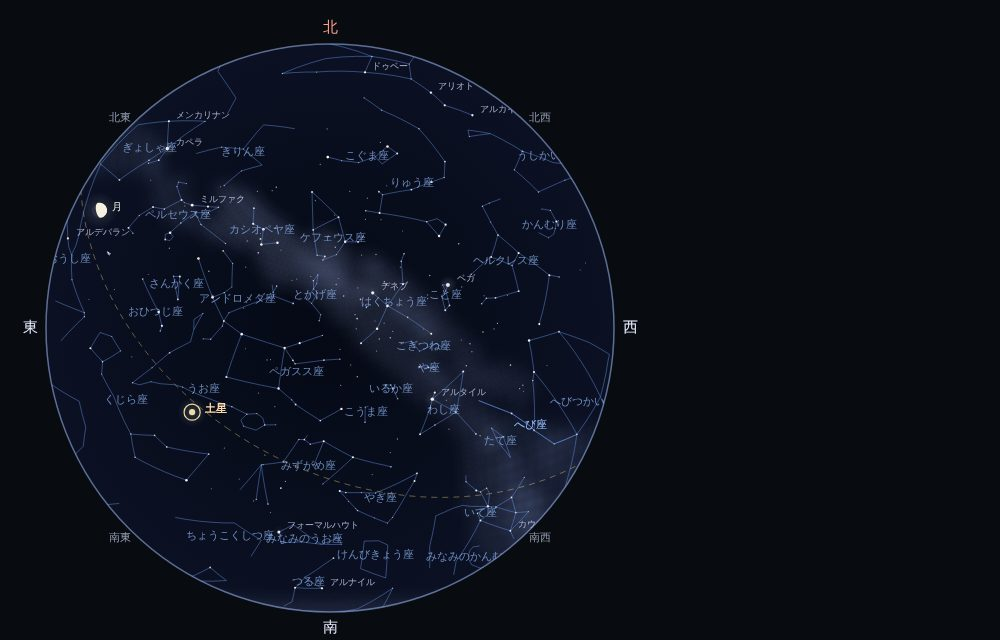
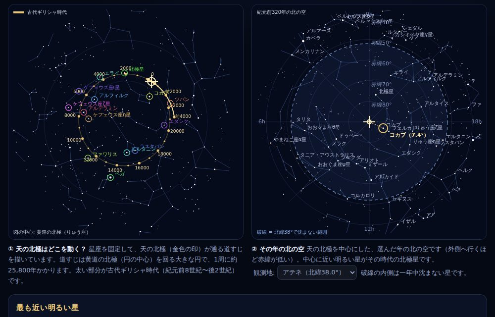
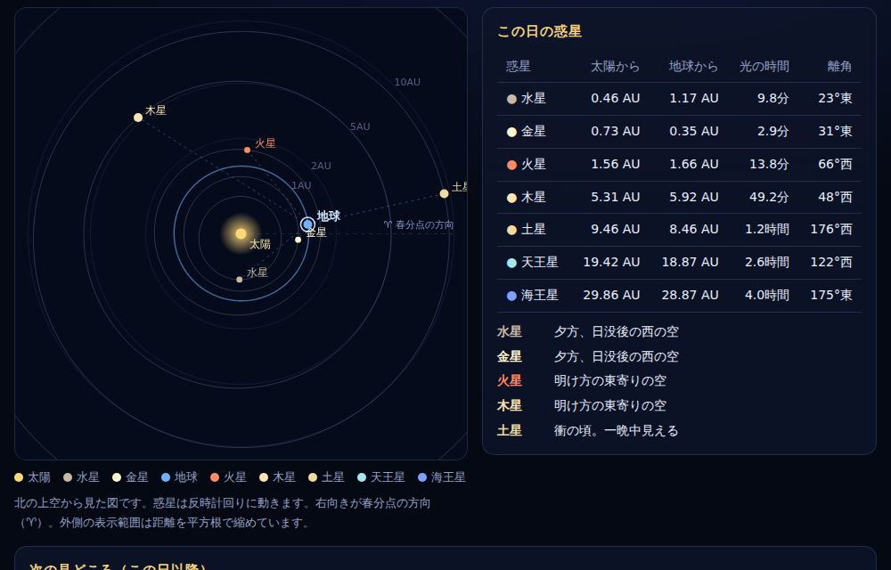
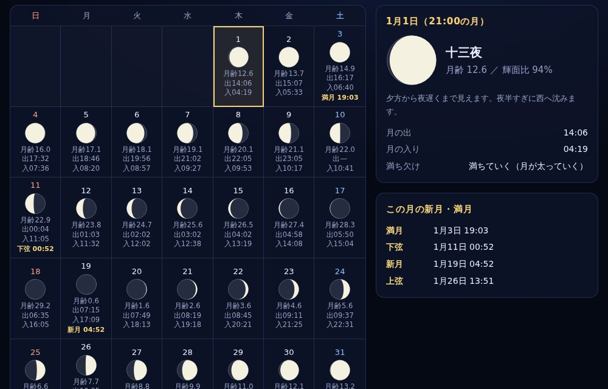
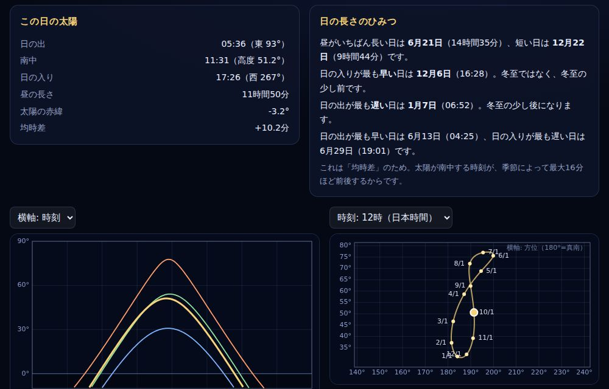
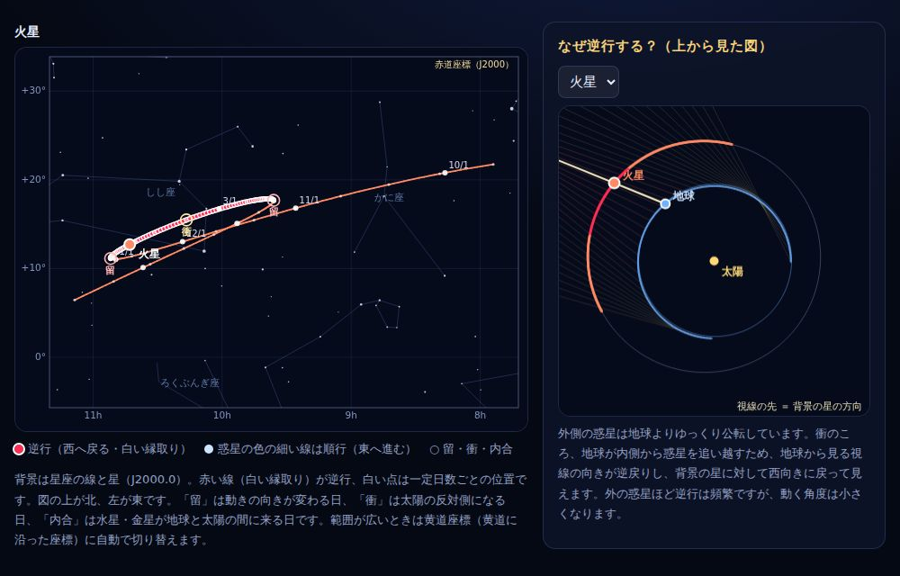
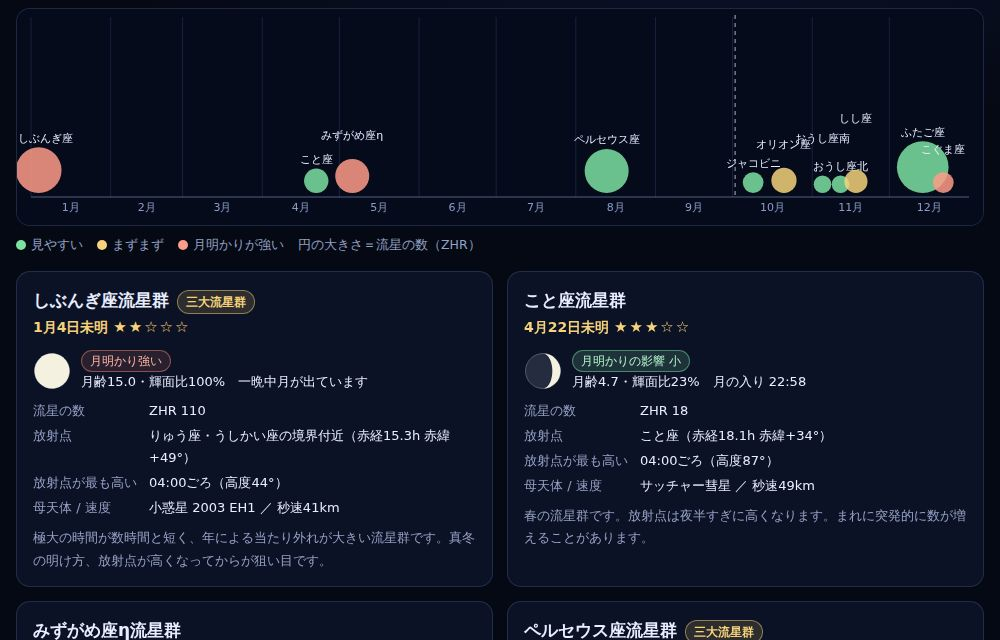
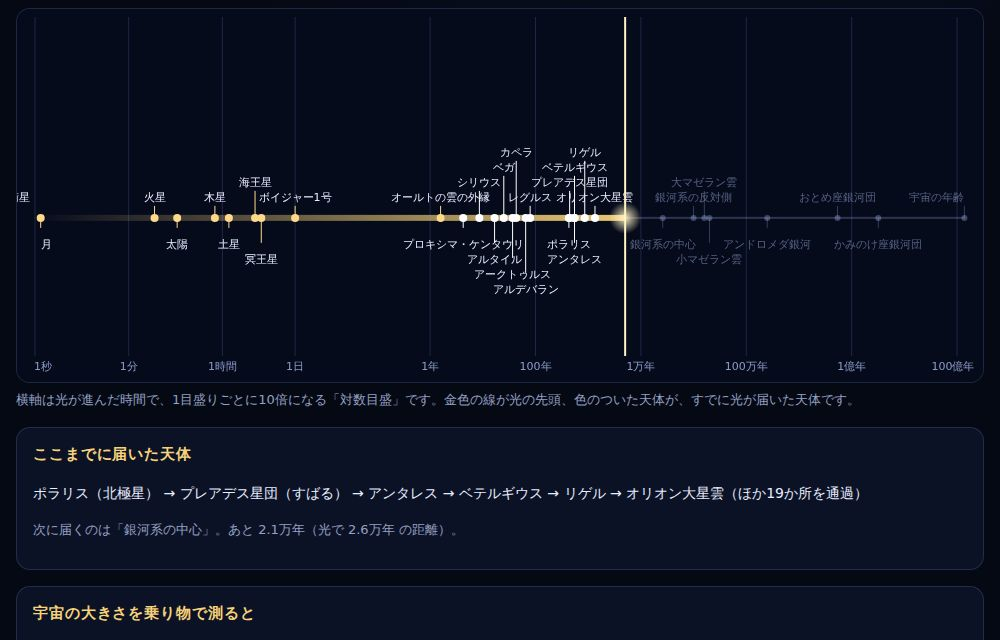

星空シミュレーター
今夜の星座や、日本各地で見える星空を再現します。日時と場所を変えて、星座・天の川・月・惑星を観察できます。
- 全天図と広角ビュー
- 日の出入り・月齢・惑星の位置
- 「いま見える星座」の一覧

北極星の移り変わり
歳差運動で天の北極は動きます。古代ギリシャ時代から未来まで、その時代の北極星と北の空を見比べられます。
- 紀元前4000年〜西暦22000年
- 古代ギリシャ時代の北の空
- ポラリス、アルデラミン、ベガなど

惑星の位置図
太陽系を真上から見た位置図。好きな日の惑星の位置と地球からの距離、次の衝や最大離角が分かります。
- 内側から海王星まで
- 惑星は夜空のどこに見える？
- 次の衝・最大離角の日付

月の満ち欠けカレンダー
1か月分の月の形・月齢・月の出入りと、新月・上弦・満月・下弦の日時をカレンダーで確認できます。
- 月の形と月齢
- 月の出・月の入りの時刻
- 十五夜などの呼び名

太陽の動きとアナレンマ
太陽の通り道、昼の長さ、南中高度、均時差、1年で描く8の字（アナレンマ）、夏至・冬至の時刻が分かります。
- 都市ごとの日の出・日の入り
- 日の入りが一番早い日は？
- 二至二分の日時

惑星の動きと逆行
地球から毎日同じ時刻に惑星を観測すると、星座の中をどう動くか。火星の逆行など、水星から海王星まで全惑星の見かけの動きを再現します。
- 火星の逆行ループ（次回の逆行も自動表示）
- 上から見た図で「なぜ逆行するか」を解説
- 留・衝・内合の日付

流星群カレンダー
一年の主な流星群の極大日、放射点の高さ、月明かりの影響から、見やすさの目安を確認できます。
- しぶんぎ座・ペルセウス座・ふたご座など
- 年ごとの月明かりの影響
- 放射点がいちばん高くなる時刻

光で旅する宇宙
光の速さで進むと、月・太陽・星・銀河まで何秒、何年かかる？夜空の星の光がいつ出発したかも分かります。
- 1秒から宇宙の年齢まで
- 新幹線や探査機で行ったら？
- 星の光は何年前の姿？